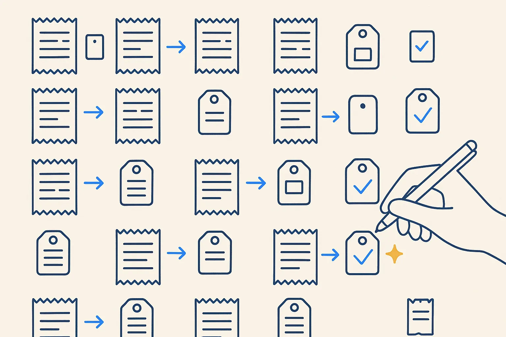

Sample · beginner
Turn twenty receipts into structured data
Photos of receipts in, one small metadata file per receipt and a table out.

Based on: Every receipt filed on the day it happened · Level: beginner · Time: 45 minutes live, or one Build Day afternoon
Steps
- Decide the five fields that matter: date, vendor, amount, VAT, category.
- Let the AI read each receipt and write the fields into a small YAML file next to it.
- Check every field by hand for five receipts. Count the mistakes.
- Write the mistakes down as rules for the AI. Run again.
- Collect all files into one table.
What you take home
A working result on example data, the rules written down, and the list of cases the rules did not cover — the honest next step.
The neighbourhood